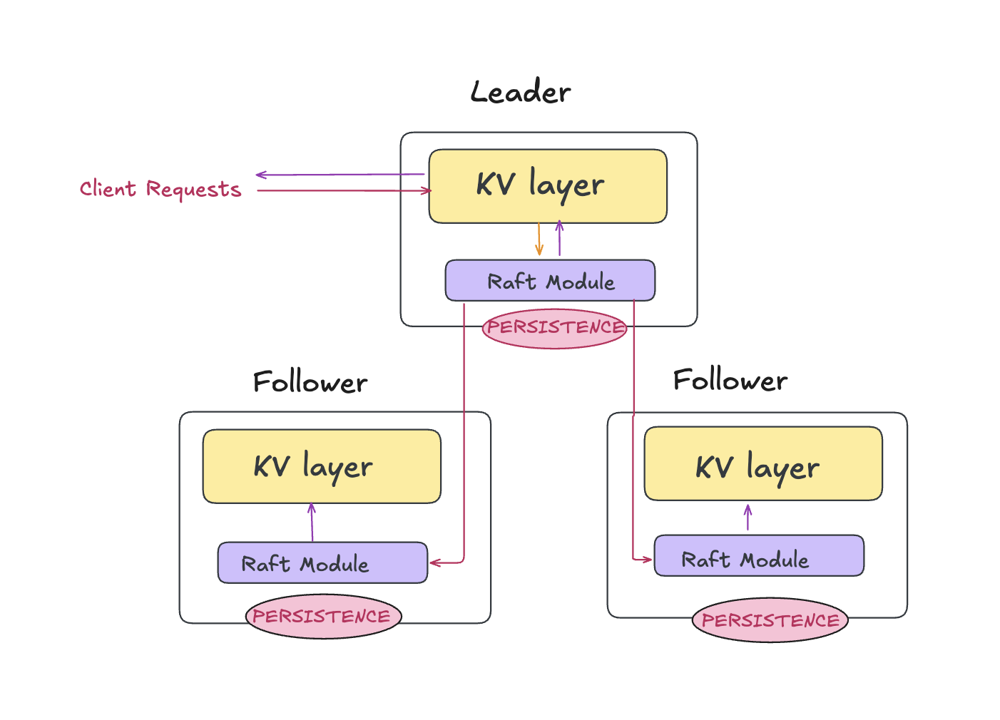
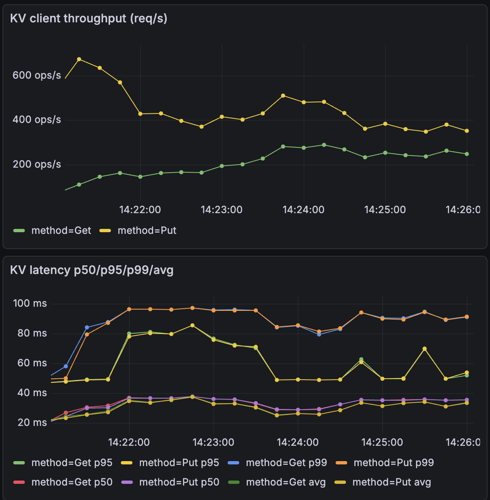
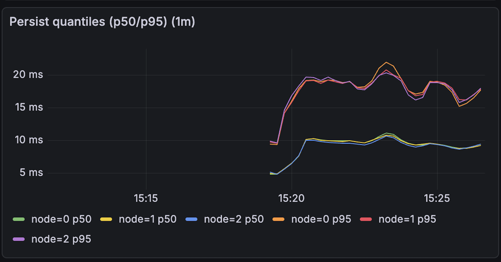
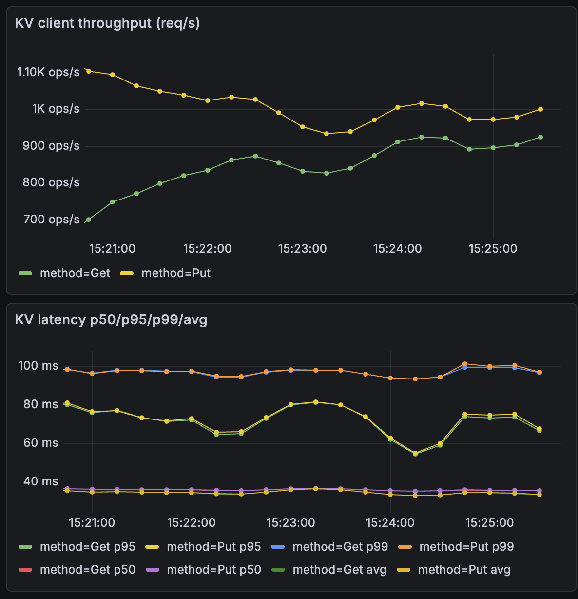
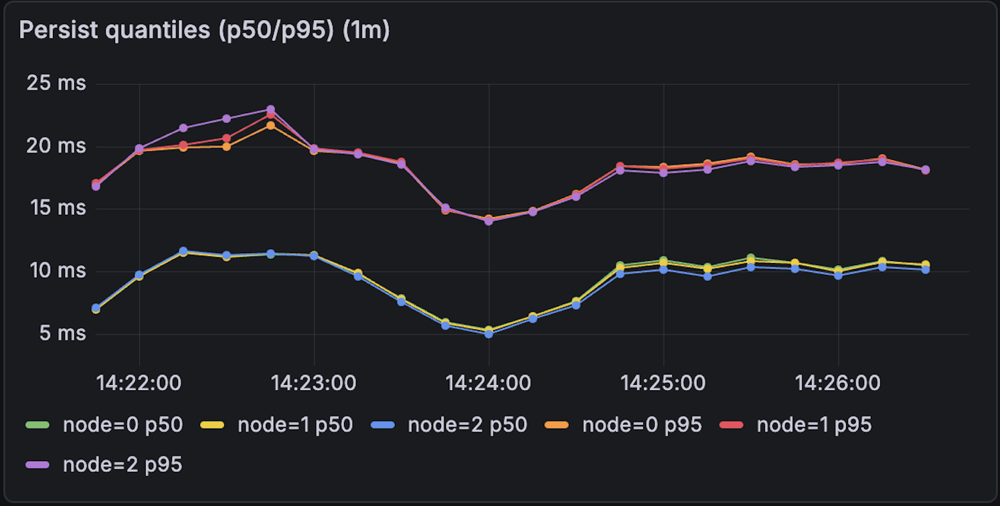
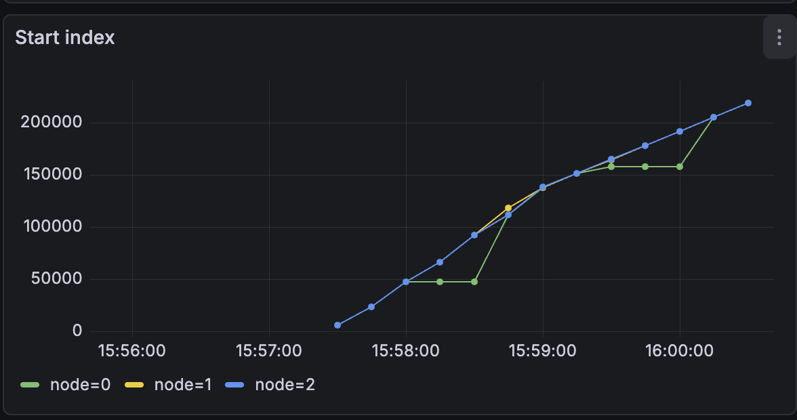
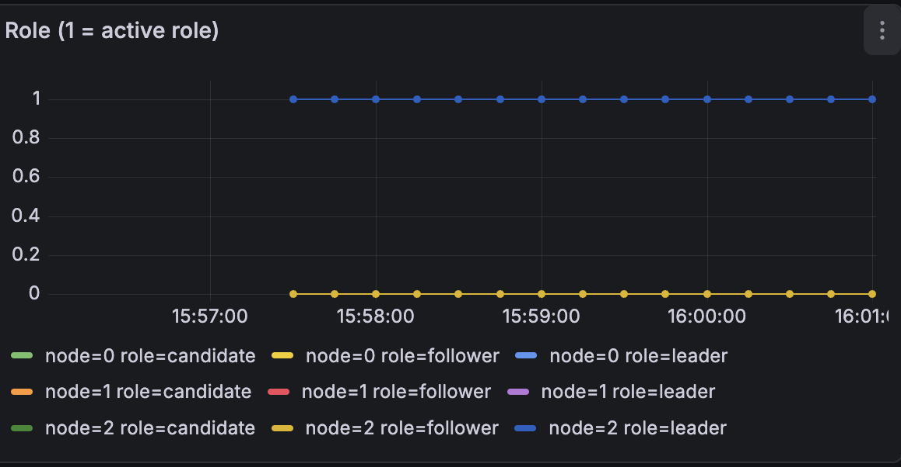
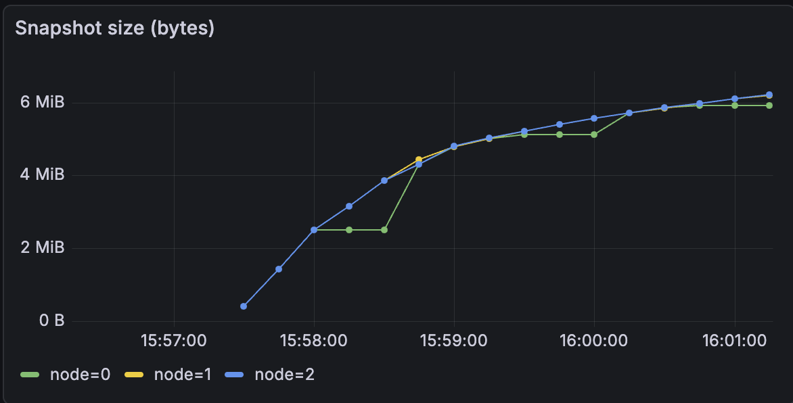

I’ve always been fascinated by how distributed systems maintain a single consistent truth despite crashes, network partitions, and message loss. That curiosity led me to distributed consensus protocols and a desire to understand both their theory and implementation.
To understand it in practice, I took on a self driven project to build the Raft consensus protocol in Go, implementing core features like elections, replication, persistence, and snapshotting, and used it to power a strongly consistent replicated KV store. I also designed an observability pipeline to monitor the system.
This blog walks through the system’s architecture,the design decisions behind it and challenges it exposed.
Introduction
Before diving into what I built, we first need to look at the problem Raft solves.
In a distributed environment where nodes can fail or disconnect at any time, agreeing on the state of the system is notoriously difficult. Raft cuts through this complexity by enforcing a single consensus timeline. Raft aligns the cluster around a shared log. As long as a majority of the nodes are healthy, the system remains available and consistent.
The protocol relies on these invariants:
Single Leader: Decisions are centralized and only one node orders events to prevent conflicts.
Replicated Log: The log serves as the single source of truth for the sequence of events.
Majority Commit: Safety is guaranteed by quorum, data isn't trusted until a majority acknowledges it.
Deterministic Execution: Once a log entry is committed, the system guarantees that every node will apply that entry to its state machine in the exact same order.
System Overview
The system is a replicated state machine built on a leader based, event driven consensus core.
The cluster runs with an odd number of nodes to ensure a clear majority quorum for committing entries. Each node hosts the same two components —
Raft and a KV server — and nodes communicate internally over RPC.
The system runs as a cluster of multiple nodes where:
Every node hosts a Raft peer and a KV server.
At any moment, only one node acts as the Leader which sends periodic heartbeats to the followers.
The remaining nodes act as Followers and replicate the leader’s log.
We’ll now break these down across two planes that make the system easier to reason about.
Architecture Overview

Figure 1: Raft Consensus System
With the system’s components introduced, the next step is to see how they interact end-to-end.
To simplify the mental model, I organize the architecture into two complementary planes:
Consensus Plane — This is where the core RAFT protocol runs.
Application Plane - This is where the clients interact with the system
Consensus Plane (Raft)
The consensus plane is the reliability layer. It stores a
replicated log of operations and guarantees that all nodes agree on the same committed order.
Leader election: All nodes start as followers. If a follower doesn’t receive a heartbeat within an election timeout,
it becomes a candidate, increments its term, and requests votes. A node becomes leader once it wins a majority.
Leaders send periodic heartbeats to maintain authority.
Replication: Clients (through the KV layer) submit commands to the leader. The leader appends the command to its log
and simultaneously persists and replicates it to followers. Followers accept or reject the entries depending on the current state of their own logs.
Commitment via quorum: An entry becomes committed only after it is stored on a majority of nodes.
This means, even if a leader crashes, any new leader elected by a majority will contain all committed entries.
Apply stream: Once entries are committed, Raft delivers them in order to the application layer.
Durability: Raft persists its state and on recovery after a crash, it safely rejoins the cluster.
Snapshots and log compaction: To prevent unbounded log growth, Raft compacts old committed entries into snapshots. Each node separately snapshots its own state.
Application Plane (KV Store)
The application plane turns Raft’s committed log into a usable service. The KV store is implemented as a
deterministic state machine that ensures given the same sequence of committed commands, every replica reaches the same state.
The following are the key responsibilities of the application plane:
Client request handling: Clients send GET/PUT requests to the KV layer which runs on the leader. This server packages the request into a command and send it to Raft.
The KV layer then waits until the command appears on the apply stream as committed. It then applies these changes to the in memory map and replies to the client. This is what enforces
strong consistency.
Snapshots from the KV layer: As state grows, the KV server periodically creates a snapshot of its current state and
hands it to Raft. Raft persists it and uses it to discard old log entries safely.
Request Flow
Client sends a KV operation to a server.
If the server is leader, it proposes the operation to Raft and appends it to the log.
Leader replicates the log entry to followers via AppendEntries.
Once a majority acknowledges, Raft marks the entry committed.
Committed entries are emitted on the ApplyMsg channel and applied by the KV state machine.
The KV server responds to the client after modifying the in memory map.
Design Decisions
Let’s talk about a few of the core architectural choices behind this system and more importantly, why they were made. Each one was driven by practical needs uncovered during implementation.
Per peer Replicator: I initially spawned separate goroutines to send every new entry to the followers but that inflated tail latency since many go routines were blocked on I/O doing redundant work. I then switched to per peer replicators with at most one in flight RPC per follower, reducing redundant work and goroutine churn.
Latency aware replication : I chose to parallely send Append RPCs to the followers and simultaneously persists its log locally, reducing commit latency by overlapping disk and network work.
Asynchronous snapshotting : I chose independent persistence for Raft state and snapshots to avoid blocking replication.
Disk Persistence: Each disk write first creates a temporary file and then renames the file atomically. This prevents corruption of data during crashes.
Append RPC retires: I chose the optimization of sending only one RPC per term when the follower rejects an RPC due to conflict in its log. This reduces the number of RPCs.
OCC backed KV store: I built the KV store with optimistic concurrency control using versions. This allows the user to read the most recent write providing linearizable behavior.
Observability
The system integrates observability through a pluggable MetricsSink interface that the Raft core calls at key lifecycle points.
This keeps the consensus logic clean while making it easy to export metrics to any backend. A few metrics that are instrumented:
Health and latency: Per RPC success or failure rates and request duration, including server side latency.
Leader health and stability: Tracks term and role transitions, along with election start to finish durations.
Replication and log growth: Observes per follower replication lag and log length
Persistence and snapshots: Records Snapshot duration and size, Raft state size, and disk write counts.
Load Testing & Evaluation
The benchmarking of the system was done on a single server. I started each node as a separate process which communicates with Go rpc.
This section focuses on a few tests cases to illustrate the system's behavior under load.
Baseline tests
clients=20 snapshot_size=4MB read_ratio=0.0
clients=56 snapshot_size=4MB read_ratio=0.0
The systems was first tested by starting 3 servers in the normal mode without any crashes to measure the maximum latency and number of operations it can handle with snapshotting size of 4MB.
The workload consists primarily of PUT operations, but because the KV store uses optimistic concurrency control (OCC), version conflicts trigger an additional GET to fetch the latest version before retrying the update.

Figure 2:Number of client operations and latency with 20 clients

Figure 3:Persistence latency with 20 clients

Figure 4: Number of client operations and latency with 64 clients

Figure 5: Persitence latency with 64 clients
The system exhibits almost similar latency for both 20clients and 64 clients. This confirms that the bottleneck is Disk latency, not CPU. The Raft leader effectively batches multiple client requests into single disk syncs, allowing throughput to rise linearly while per-request latency remains anchored to the hardware's fsync speed.

Figure 6:Start Index

Figure 7:Role of each node

Figure 8:Snapshot size
The graphs say show that when one node crashes and restarts it picks from where it left. This is shown by the startIndex being constant at 50000 for node 0 and then picks from there when it restarts.
Bottlenecks
As the system evolves, there are a few key areas I’d like to build which include:
ReadIndex optimization: Reads currently go through the commit path even in cases where they could be served safely without adding log entries.
Coarse grained disk persistence: Persistence currently writes the full Raft state and snapshot, which increases I/O cost and can slow down the write path.
Leader centric request handling: Followers are primarily used for replication and client traffic is effectively handled by the leader, leaving follower capacity underutilized.
Single machine test environment: Running all nodes on the same host serializes disk I/O across replicas, likely overstating latency compared to a true multi-machine setup.
Closing Thoughts
This project was my first deep dive into Go and using it to build a distributed consensus protocol.
It helped me develop a much stronger intuition for what it takes to design a reliable system, one that
continues to make progress under failures while still preserving correctness.
The most interesting challenges were in handling failures, persistence,
and timing without compromising safety or liveness.
If you’re building in this space, I’d love to connect. I’m always open to exchanging ideas,
discussing alternative designs, or exploring potential collaborations.